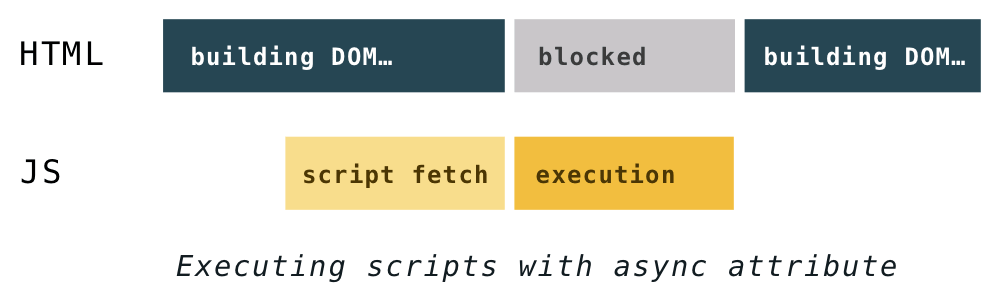

Завантаження і виконання скрипта, зазначеного в тезі <script> без будь-яких атрибутів, блокують обробку HTML-документа і побудову DOM. Це проблема.
<script src="path-to-script.js"></script>
Коли аналізатор зустрічає такий тег, обробка HTML-документа припиняється і починається завантаження файлу скрипта, зазначеного в атрибуті src. Після завантаження скрипт виконується, і тільки потім відновлюється обробка HTML. Це називається «блокуючий» скрипт.
Атрибути defer та async були введені, щоб дати розробникам можливість краще контролювати спосіб завантаження скриптів, і коли саме їх виконувати.
Атрибут defer
<script defer src="path-to-script.js"></script>
Атрибут defer вказує браузеру завантажувати файл скрипта у фоновому режимі, паралельно обробці HTML-документа і побудові DOM. Скрипт буде виконаний тільки після того, як HTML-документ був оброблений, а DOM побудований. Такі скрипти не блокують побудову DOM-дерева і гарантовано виконуються у тому порядку, в якому вказані в HTML-документі.

Атрибут async
<script async src="path-to-script.js"></script>
Завантаження скрипта з атрибутом async не блокує побудову DOM, але він виконується відразу після завантаження. Це означає, що такі скрипти можуть заблокувати побудову DOM, і виконуються у довільному порядку.
